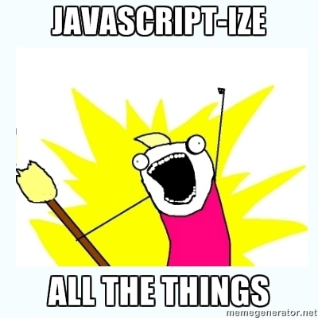
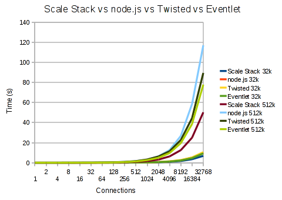

.splash.center <big>Håvard Stranden</big><br/> <img src="presentation/twitter.png" width="40" valign="middle" /> <small>@havardstranden</small><br /> <small>http://ox.no</small><br /> --- .center.middle ## Skalering er vanskelig. --- .center.middle ## Mål: ## Gjør det enkelt å lage applikasjoner med ekstrem ytelse. --- .middle ## Moderne computing-utfordringer * CPU-kjernen har nådd "maksimal" ytelse * I/O er dyrt --- .center.middle ## Hvordan skalere videre? --- .middle ## Tråder * C/C++, Java, C#, etc. * OS-nivå scheduler * Låsing som synkroniseringsmekanisme * Høy scheduling-kostnad --- .middle ## Grønne tråder/fibre * Python `greenlet`, Ruby `Fiber`, etc. * User space * Unngår låsing (egentlig én tråd) * Lavere scheduling-kostnad --- .middle ## Grønne prosesser * Erlang * User space (ish) * Lav scheduling-kostnad * Unngår låsing (isolert fra hverandre) --- .middle ## OS event-looper * C/C++, `epoll`, `kqueue`, `IOCP` * Kernel space * Isolerte * Lav scheduling-kostnad --- .center.middle  ## Event-loop --- .middle ## Skrive i C? * Slutte å tenke synkront * Ikke bland inn synkrone bibliotek * Ingen støttehjul --- .center.middle ## C er vanskelig. --- .middle ## Javascript? * Enkel synkroniseringsmodell (alt i én tråd) * Ikke-blokkerende (DOM) * Eventdrevet (`click`, `keydown`, etc.) * Closures er naturlig fit for callbacks * Ingen eksisterende I/O-modell * Betydelige ytelsesforbedringer siste 5 år --- .center.middle  V8 + evented I/O --- .center.middle ## Node.js er asynkront No-no: .javascript var contents = fs.readFileSync('foo.txt'); console.log(contents); Yes-yes: .javascript fs.readFile('foo.txt', function(contents) { console.log(contents); }); --- .center.middle ## Events er innebygd Innebygde `events.EventEmitter` er vår venn: .javascript var file = fs.createReadStream('foo.txt'); file.on('data', function(data) { console.log(data); }); --- .center.middle ## HTTP er enkelt .javascript require('http').createServer( function(req, res) { res.writeHead(200, {'Content-Type': 'text/plain'}); res.end('Hei, Trondheim!'); }).listen(1337); --- .center.middle ## TCP også .javascript require('net').createServer(function(socket) { socket.write('Here be echo.'); socket.pipe(socket); }).listen(1337); --- .center.middle ## Hvem bruker Node.js? --- .middle ## LinkedIn: Mobil * iOS * Android * WP7 * m.linkedin.com --- .middle ## Shopify: Batman.js * Rapportering * Interne applikasjoner --- .middle ## Microsoft: Skyen * Node.js på Windows * Node.js på Azure * Node.js i IIS --- .middle ## Yahoo: Graceful degradation * Server-side-rendring for inkompatible klienter * Gjenbruke Javascript * En stor fremtid for Node.js --- .middle ## Hva med biblioteker? * "Operativsystemstøtte" innebygd * Prosessmodell * Filsystem * Nettverk * Krypto * Etc. * NPM, pakkesystem for tredjeparts bibliotek --- .center.middle Innebygd pakkestyring for Node.js --- .middle ## NPM-kommandoer * `npm search <query>` * `npm install <pakke>` * `npm install -g <pakke>` * `npm uninstall <pakke>` --- .middle ## NPM-installeringer * Pakker lever i `node_modules` * Globale pakker i global `node_modules` * Kan installere biblioteker, binærfiler, etc. --- .center.middle ## Lage egne pakker `package.json` .javascript { "name": "openid", "description": "OpenID 1.1/2.0 " + "library for node.js", "author": { "name": "Håvard Stranden", "email": "havard.stranden@gmail.com", "web": "http://ox.no" }, "version": "0.4.1", "engines" : [ "node >= 0.6.0" ] } `npm publish` --- .left.middle ## Toolchain * Node * Teksteditor * Debugger * node debug * node-inspector * ndb * IDE * Cloud9 * Jetbrains WebStorm --- .center.middle ## Demo: Drawnode --- .center.middle  --- .center.middle --- .middle ## Callback hell .javascript fs.readFileSync('foo.txt', function(data) { data.split('\n').forEach(function(i, line) { line.split(' ').forEach(function(j, word) { // ... }); }); }); --- .middle ## Manglende bibliotek * SQL? * ORM? * XML? --- .middle ## Endringstakt * Ustabilt API * Brukne komponenter * Lite fullskala-testing --- .center.middle ## Ting man lurer på --- .center.middle ## Bør jeg bytte til Node.js? Nei. --- .center.middle ## Bør jeg vurdere Node.js som plattform? Ja, i noen tilfeller. --- .middle ## When to Node, kortversjon: * Høye ytelseskrav (sanntid) * Lite budsjett * Tilgang på Javascript-kompetanse * Smalt domene --- .middle ## Hva med Netty, Twisted, EventMachine, etc.? * Har du Java-kompetanse og/eller Java-infrastruktur, bruk Netty. * Har du Python-kompetanse og/eller Python-infrastruktur, bruk Twisted. * Ser du mønsteret? --- .center.middle ## Men hva yter BEST? --- .center.middle <br />  Ser du trenden? --- .center.middle ## Domenet og anvendelsen bestemmer. Build. Measure. ## Kompetanse er dyrest. --- .center.middle ## Spørsmål? <br /><img src="presentation/twitter-blue.png" width="40" valign="middle" /> @havardstranden<br /> http://ox.no